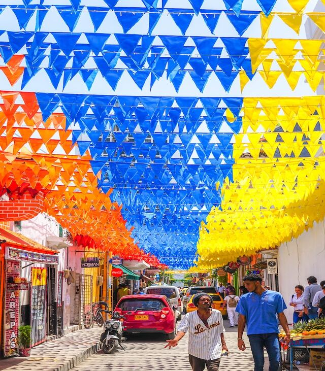
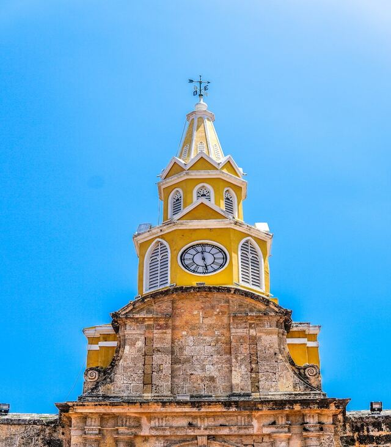

Cartagena, known since the colonial era as Cartagena de Indias, is a city and one of the major ports on the northern coast of Colombia in the Caribbean Coast Region, bordering the Caribbean sea.
Cartagena is located to the north of Colombia, at 10°25'N 75°32'W. It faces the Caribbean Sea to the west. To the south is the Cartagena Bay, which has two entrances: Bocachica (Small Mouth) in the south, and Bocagrande (Big Mouth) in the north. Its coastal line is characterized morphologically by dissipative beaches.
The Downtown area of Cartagena has varied architecture, mainly a colonial style, but republican and Italian style buildings, such as the cathedral's bell tower, can be seen.

Cartagena's old city is its principal attraction, particularly the inner walled town, consisting of the historical districts of El Centro and San Diego.

The best way to experience the Old Town is to wander in leisurely fashion, savoring the architectural details, street life and local snacks along the way. Nighttime adds a whole different dimension.

It's one of finest examples of preserved colonial architecture in the Americas, packed with churches, monasteries, plazas, palaces and mansions with their famous overhanging balconies and shady patios.

Modern Cartagena is the capital of the Bolívar Department, and had a population of 876,885 according to the 2018 census